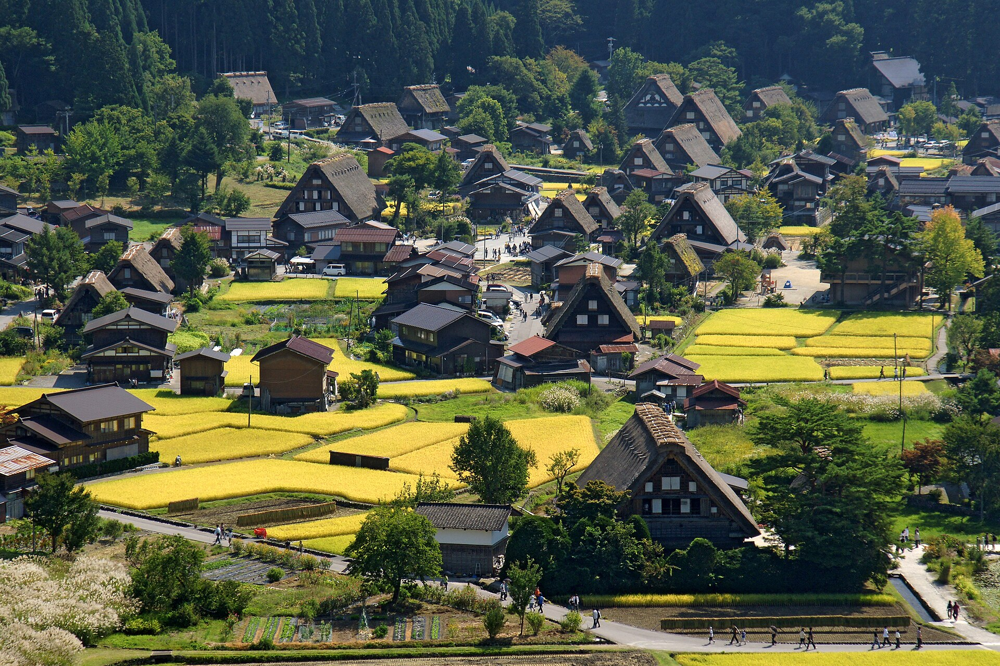

从高山去白川乡的那个下午，一路阴雨。
巴士上的人不算多，大约只坐了三分之一。车子钻进山里，雨水在玻璃上拉出细长的痕迹，窗外的树林与坡地被冲淡成一层层灰绿色。这样的路很适合安静，乘客们大多望着窗外，或者低头看手机。
后来，车穿过一个很长的隧道。
出口那一端，天忽然放晴了。
我刚把目光转向窗外，一道巨大的彩虹便横在山谷上方，颜色清晰得有些不真实。我几乎没有经过思考，脱口喊了一声：“Rainbow！”
车上的人顺着我的目光一起望过去，随后齐齐拿出手机。原本互不相识的一车人，因为同一声惊呼，忽然在几秒钟里拥有了共同的方向。
巴士还在蜿蜒的山路上向前，那道彩虹很快被山体、树木和下一个转弯遮住了。
旅行里最好的景象，常常不给人准备的时间。它只负责出现，至于你有没有抬头，是你的事。
抵达白川乡巴士站时，眼前却是另一番景象。
车上的游客不多，车站里的人却比我想象的多得多。白川乡能够留宿的地方有限，大部分游客都是半日往返，早上进入，下午离开。这个时刻，站里挤满了等候班车的人，他们拉着箱子、撑着伞，排成一条条准备离开山谷的队伍。
我拖着行李，逆着人流往村子里走。
小雨还在飘。那些过去只在屏幕里见过的合掌屋，一座接一座出现在面前。陡峭的茅草屋顶从雨雾里探出来，像两只合拢的手，也像童话书里被刻意夸张过的房子。即使一手拖着箱子，一手还要遮雨，我还是忍不住举起相机，一路走，一路拍。

我那晚住在一座叫“幸エ門”（Koemon）的合掌造民宿。这里每天只接待两组客人，经营者是一位四十岁上下的女主人。
她把我迎进房间以后，开始了一场长达二十多分钟的说明。
晚饭几点开始，浴室怎样使用，暖气怎么调节，拖鞋穿到哪里，哪些门可以打开，哪些地方不要进入。她在日语与英语之间来回切换，有些内容要重复好几遍，直到看见我真正听懂并点头，才进入下一项。
我其实有些抱歉。预订时，民宿已经注明希望接待精通日语的客人，而我的水平显然远谈不上精通。她大概也知道沟通不容易，却没有因此省略任何一项说明。对她而言，房子既是生意，也是祖辈留下来的生活秩序，客人住进来，就需要认真知道怎样与它相处。
我的房间原本有一扇推拉木门。
按旧时的格局，门一打开，房间可以直接通向屋外。但现在那扇门已经封住，外侧还立着挡住视线的木板。我起初觉得可惜，仿佛因此少体验了一点最原始的日本住宿方式。
等我走出民宿，看到一拨又一拨游客站在那间屋子外面拍照，才明白那块木板的用意。
屋外的景色的确很好，合掌屋、田地和山色自然地叠在一起。倘若没有那块挡板，我大概会在换衣、休息甚至发呆的时候，不断出现在陌生人的旅行照片里。
世界遗产让一座民居获得了被所有人观看的价值，也迫使真正住在里面的人，为自己重新造出一点不被观看的空间。
晚饭十分丰盛。
小碟、小碗和热锅铺满桌面，食材并不奢华，却被安排得一丝不苟。我大概真的饿了，把食盒里的米饭吃得一粒不剩。那一盒少说也有半斤，吃完时连自己都有些意外。
第二天早饭，我发现隔壁客人的米饭是一人一碗，只有我的桌上，依然摆着一整个食盒。
我猜女主人记住了前一晚的食量，特意又为我多准备了一些。
这种热情很难拒绝。于是我再次把食盒吃空。
许多民宿的温度，并不体现在多么华丽的服务里。它只是有人默默看见你昨晚多吃了一碗饭，并在第二天清晨，把这件小事变成新的招待。
那段旅行中，我正在读卡尔·萨根的《宇宙》。
连续几天住在山谷里，我每晚都期待能看见星空，可惜天气始终阴沉。白川乡这个下午还在下雨，到了夜里，云层终于慢慢散开。
我一直守到深夜，穿上民宿准备的日式外褂，踩着木屐，沿着村路“哒、哒、哒”地往没有灯的地方走。
白天挤满游客的村落已经完全安静下来。商铺熄灯，路上无人，屋檐与田地只剩下模糊的轮廓。木屐敲在路面上的声音显得格外清楚，走得越远，越像是自己闯进了某段不属于现代旅行团的时间。
我仰头看天。
没有看到想象中横贯天际的璀璨银河，但星星已经足够多，山谷也足够安静。
读《宇宙》时，人很容易被光年、星系与无边尺度带走；可真正站在一个深夜的山村里，最先感受到的并不是宏大，而是自己的呼吸、木屐的声响，以及头顶那一点迟来的晴朗。
宇宙并没有因为我来到白川乡而更加辽阔，只是那一晚，村庄终于安静到足以让我听见它。
第二天天刚蒙蒙亮，我便出门往展望台走。
我想看看整个村落清晨升起炊烟的样子。可一出门就发现雾气很重，合掌屋只剩下朦胧的屋顶。我还是没有停下，心里想着，也许走到山上，雾正好就散了。
运气并没有那么好。
展望台上白茫茫一片，别说炊烟，连村子的轮廓都看不见。站了一会儿，我只好原路返回。
从展望台回住处的路上，遇到几个出门上学的孩子。他们穿着统一的衣服，三三两两结伴，自己走在雾气尚未散去的村路上。
这个瞬间让我忽然意识到，白川乡不只是一处被列入名录的古老村落。
当观光巴士还没有进来，纪念品店还没有开门，孩子已经背着书包去上学。世界遗产保护的是房屋的形状，而这些走在清晨里的孩子，才让房屋仍然属于生活。
回到住处，我像个来山里休养的大爷，提着装有浴巾和衣物的篮子，去了村口的日归温泉。
我进去的时候，几名年轻人刚刚泡完离开。偌大的浴场只剩下我一个人。
露天风吕靠着河岸。身体浸进热水，耳边是河水奔流的声音，眼前是从山谷里缓慢升起的雾。清早爬上展望台，本想看一场村落全景，最后什么也没有看到；却因为回来得早，意外独享了一整个露天浴场。
旅行的得失有时很公平。雾遮住了远景，又把近处的声音与温度还给了我。
泡完澡，吃过早饭，收拾好行李，我再次走进村子。
雾已经开始散了。
我重新登上展望台，这一次，整个村落终于铺展在眼前。没有看见想象中的晨间炊烟，但一座座合掌屋像摆件一样散落在山谷之间，田地、道路、树林和普通民居把它们连接起来。
从这个角度看，所谓“童话村落”其实并不悬浮。屋子要面对雨雪，田地需要耕作，孩子要上学，住客要吃饭，本地人还要想办法挡住游客的镜头。正因为这些琐碎的现实仍在发生，那些古老屋顶才不只是博物馆里的标本。
展望台也有很现实的一面。视野最好的一块有座区域被单独划出，需要买一杯咖啡才能进入。旁边还有工作人员免费为游客拍照，同时也用自己的相机再拍一张，现场给你看成品。喜欢就付钱买下，不喜欢，离开便是。
这样的景点经营方式，倒是全世界都很统一。人们千里迢迢来看一处不可复制的风景，而生意总能找到最适合站立的那一小块地方。
十点多，游客渐渐多了起来。
与之前走过的宿场不同，白川乡的日本本地游客明显更多，其中不少是带着婴幼儿出行的家庭。那时已是深秋，年轻父母穿得很保暖，怀里一两岁的孩子却常常光着脚，脚丫在冷空气里冻得发紫。
这并不是我那天只见到的一例。它让我想起冬季札幌街头穿短裤的女学生。我当时忍不住猜想，日本孩子的“抗冻”是不是从很小就开始练习。
当然，仅凭旅行中的几次目击，无法判断一个社会真实的育儿习惯。旅行者看到的是切片，切片很生动，却未必足以成为结论。它更适合被诚实地保留为一个疑问：那些在深秋裸着脚的孩子，究竟是当地人的习惯，还是我尚未理解的另一种生活经验？
离开白川乡时，巴士站大概又挤满了人。
很多人带走的是那张从展望台拍下的村落全景：尖锐的茅草屋顶，整齐地伏在群山怀里。
我后来真正记得的，却不只是那张照片。
我记得隧道出口突然出现的彩虹，一车人同时举起的手机；记得女主人不厌其烦地确认我是否听懂；记得保护住客隐私的木板，第二天早晨特意为我留下的整盒米饭；记得深夜木屐敲击路面的声音，也记得晨雾里上学的孩子和河边独属于一个人的热水。
世界遗产给人看的，往往是屋顶。
可一座村庄真正值得留宿，是因为屋顶下面仍有人认真生活。
彩虹转瞬即逝，雾气终会散去，只有生活还在山谷里，一天一天地继续。